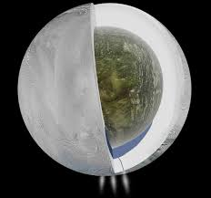

|

Enceladus (Buz Volkanları)
Enceladus, Satürn’ün en dikkat çekici uydularından biridir ve özellikle yüzeyindeki buz volkanlarıyla (kriyo volkanlar) tanınır. Çapı yalnızca yaklaşık
500 kilometre olmasına rağmen, sahip olduğu jeolojik faaliyetler onu Güneş Sistemi’nin en ilginç gök cisimlerinden biri yapar.
Yüzeyi neredeyse tamamen parlak buzla kaplıdır ve bu nedenle Güneş ışığını çok güçlü bir şekilde yansıtır. Bu parlaklık, Enceladus’u teleskoplarla
gözlemlendiğinde kolayca fark edilir hale getirir. Yüzeyinde derin çatlaklar, yarıklar ve buzla kaplanmış düzlükler bulunur. Ancak onu diğer uydulardan
ayıran en çarpıcı özellik, güney kutup bölgesinde tespit edilen devasa buz ve su buharı püskürmeleridir.
Cassini uzay aracı, bu püskürmelerin Satürn’ün halkalarına bile katkıda bulunduğunu ortaya çıkarmıştır. Bilim insanları, bu buz volkanlarının yüzeyin
altındaki sıvı bir okyanustan beslendiğini düşünmektedir. Bu okyanusun tuzlu su, organik moleküller ve ısı kaynağı içermesi, Enceladus’u yaşam için
potansiyel bir aday haline getirir.
Jeolojik açıdan aktif bir uydu olan Enceladus, küçük boyutuna rağmen büyük bir enerjiye sahiptir. Yüzey altındaki gelgit etkileriyle oluşan ısı,
buz tabakalarının altında sıvı suyun varlığını sürdürebilmesini sağlar. Bilim insanları için Enceladus, sadece Satürn’ün bir uydusu değil, aynı zamanda
yaşamın evrende başka nerelerde ortaya çıkabileceğini araştırmak için bir anahtar konumundadır.
|